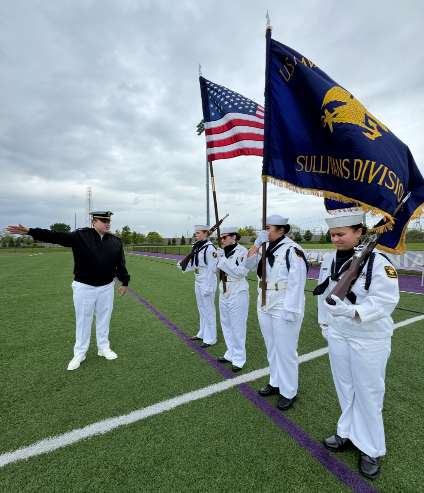

Command, instruction, and volunteer support.
Use this area for the Commanding Officer, Executive Officer, training staff, instructors, and adult billets.
Leadership
This page replaces the former Staff page with a clearer view of adult leadership, senior cadet billets, and the responsibilities families should understand.

Use this area for the Commanding Officer, Executive Officer, training staff, instructors, and adult billets.
Senior cadets help translate standards into daily unit culture.
Operations, training, admin, supply, public affairs, and support roles.
For now, direct public contact to info@thesullivansusnscc.com.